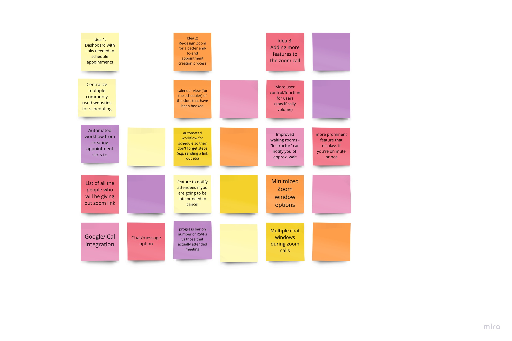

The remote interaction our team wanted to improve was the process of scheduling and going to meetings. Generally, we felt that existing applications don't offer a streamlined process to schedule meetings and that some user interfaces were not intuitive enough and diminshed the user experience. We first brainstormed ways to improve scheduling and video meeting apps, like Survey Monkey and Zoom. We cateogrized our ideas into three directions (discussed below) that we could take our improvement to faciliating virtual meetings.
Brainstorming
We sent a group of JHU students a survey on common Zoom features to understand and prioritize the most pressing pain points students face in scheduling remote meetings. We came up with a list of frequently documented issues with applications used to faciliate remote interactions- including services like Calendly, Survey Monkey and Zoom. Both technical and and practical issues were assessed and comprised a three page survey. We segmented the survey into three pages with each page proposing an idea on how to improve user problems in remote scheduling. We categorized the survey as such to make it more digestible for participants and to better isolate the issues they would want fix the most. This emanated more accurate results for us to use.
Findings
The survey results informed the features that we should implement in our prototype. The final question in the survey asked students which idea seemed of most value to them. Nearly 50% of participants responded they wanted to see improvements to Zoom. This presumably could be due to how freqeunt students now use Zoom and become frustrated with some of its functionality and intuitiveness. From the survey, we saw a common trend among participants' experience with Zoom. 1. A non user-friendly meeting scheduling process 2. Issues with messasging and how the chat history is all compiled into one space, regardless if you were messasging someone privately. 3. Unwieldiness of the toolbar that appears upon screen sharing We started low-fidelity prototyping on Figma using the survey results as our guide.
JHU Specific
Zoom Life

To better understand student's opinions on remote meetings in 2020, we surveyed a diverse group of 20 JHU students.
JHU
Responses

View the summary of responses from JHU students regarding their opinions on the process of scheduling virtual meetings.
STEP 2:low-fidelity